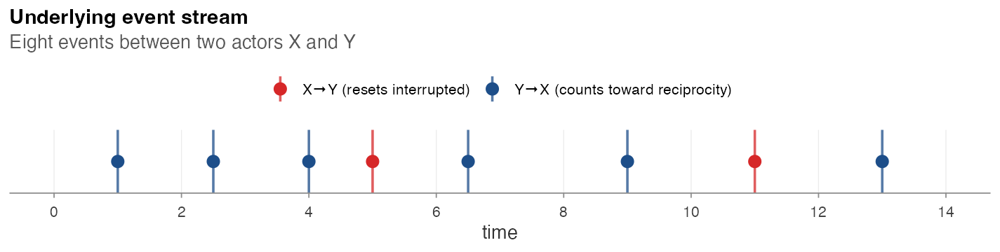
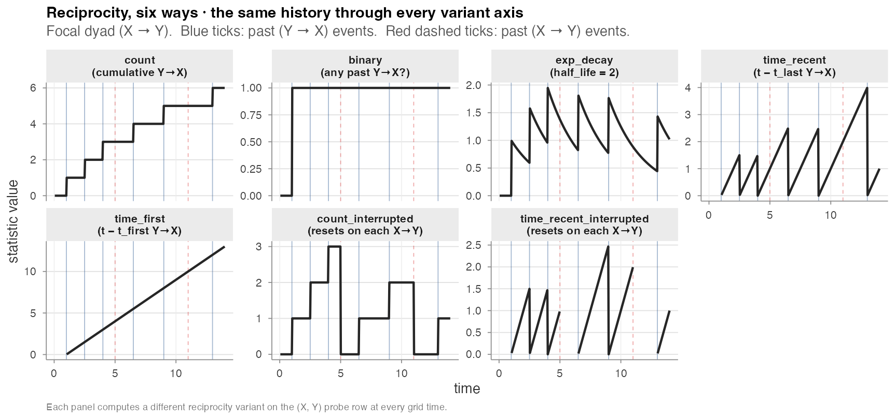

Endogenous catalogue
amore exposes 74 numeric endogenous statistics — 66 with
a compiled C++ fast path, 8 in pure R — plus the
sender_receivers_set list-column, organised into six
families × seven variant axes. The same history can be summarised many
ways; the variant axis decides which way. The simulator and the post-hoc
compute_endogenous_features() engine cover the catalogue
together, and every shared statistic is parity-tested on common event
logs.
The six variant axes, side by side
Eight events between two actors X and Y
(blue ticks: Y → X, red ticks: X → Y):

For the focal dyad X → Y, every reciprocity variant
computes a different summary of this exact history:

| Variant | Reads as | What changes at each tick |
|---|---|---|
count |
cumulative count of past Y → X events |
+1 at each blue tick |
binary |
“any past Y → X?” |
jumps 0 → 1 at the first blue tick, then stays |
exp_decay |
weighted count with half-life h
|
adds 1 at each blue tick, decays in between |
time_recent |
t − t_last (Y → X) |
resets to 0 at each blue tick, climbs linearly between |
time_first |
t − t_first (Y → X) |
monotone linear ramp once the first blue tick fires |
count_interrupted |
count since the most recent X → Y event
|
resets to 0 at each red tick |
time_recent_interrupted |
time_recent reset at each red tick |
The *_interrupted family is the central methodological
distinction of Juozaitienė & Wit (2024): a closure event “resets”
the relevant counter, so the statistic measures only the most recent
unclosed cycle. On Manufacturing it carries information distinct from
*_time_recent (Real-data
analysis).
Driver script:
paper/wiki/experiments/variant_traces.R.
The six families
| Family | Captures | Closure pattern |
|---|---|---|
| Per-actor | sender outdegree, receiver indegree, last-event recency | (no closure — per-actor totals) |
| Reciprocity | has the receiver previously fired toward the sender? | cycles |
| Transitivity | closure of two-paths | , ⇒ |
| Cyclic | closure of three-cycles | , ⇒ |
| Sending balance | joint sending behaviour vs alters | , co-occur |
| Receiving balance | joint receiving behaviour vs alters | , co-occur |
For every closure family, all six variant axes are available; some
families additionally expose an ordered axis (constrained
direction of two-path traversal). The full set is:
| Family | Statistic names |
|---|---|
| Per-actor |
sender_outdegree, receiver_indegree,
recency
|
| Reciprocity |
reciprocity_binary, reciprocity_count,
reciprocity_exp_decay,
reciprocity_time_recent,
reciprocity_time_first,
reciprocity_binary_interrupted,
reciprocity_count_interrupted,
reciprocity_exp_decay_interrupted,
reciprocity_time_recent_interrupted,
reciprocity_time_first_interrupted
|
| Transitivity |
transitivity_binary, transitivity_count,
transitivity_binary_ordered,
transitivity_count_ordered,
transitivity_exp_decay,
transitivity_exp_decay_ordered,
transitivity_time_recent,
transitivity_time_first,
transitivity_time_recent_ordered,
transitivity_time_first_ordered,
transitivity_time_recent_interrupted,
transitivity_time_first_interrupted,
transitivity_count_interrupted†,
transitivity_binary_interrupted†,
transitivity_exp_decay_interrupted† |
| Cyclic |
cyclic_binary, cyclic_count,
cyclic_binary_ordered, cyclic_count_ordered,
cyclic_exp_decay, cyclic_exp_decay_ordered,
cyclic_time_recent, cyclic_time_first,
cyclic_time_recent_ordered,
cyclic_time_first_ordered,
cyclic_time_recent_interrupted,
cyclic_time_first_interrupted,
cyclic_count_interrupted†,
cyclic_binary_interrupted†,
cyclic_exp_decay_interrupted† |
| Sending balance |
sending_balance_binary,
sending_balance_count,
sending_balance_binary_ordered,
sending_balance_count_ordered,
sending_balance_exp_decay,
sending_balance_exp_decay_ordered,
sending_balance_time_recent,
sending_balance_time_first,
sending_balance_time_recent_ordered,
sending_balance_time_first_ordered,
sending_balance_time_recent_interrupted,
sending_balance_time_first_interrupted,
sending_balance_count_interrupted†,
sending_balance_binary_interrupted†,
sending_balance_exp_decay_interrupted† |
| Receiving balance |
receiving_balance_binary,
receiving_balance_count,
receiving_balance_binary_ordered,
receiving_balance_count_ordered,
receiving_balance_exp_decay,
receiving_balance_exp_decay_ordered,
receiving_balance_time_recent,
receiving_balance_time_first,
receiving_balance_time_recent_ordered,
receiving_balance_time_first_ordered,
receiving_balance_time_recent_interrupted,
receiving_balance_time_first_interrupted,
receiving_balance_count_interrupted†,
receiving_balance_binary_interrupted†,
receiving_balance_exp_decay_interrupted† |
† Post-hoc only at the moment; the simulator’s inner loop does not yet generate from these variants.
Bipartite support
The simulator’s closure-family state matrices are sized
|U| × |U| over the unified actor universe;
compute_endogenous_features() is universe-agnostic via its
string-keyed history. Both paths handle bipartite and arbitrarily
overlapping sender / receiver sets for every closure-family statistic,
and are cross-validated on bipartite seeds by the parity test suite.
Parity status
The same closure-family statistics produced by the simulator “on the
fly” and re-computed post-hoc agree row-for-row on timing variants
(*_time_recent, *_time_first,
*_time_*_interrupted), but the count and
exp_decay families currently show an O(events)-scale
gap that needs investigation — see Validation experiments / E4.
Until that gap closes, treat the post-hoc engine as authoritative for
count statistics in downstream model fitting.